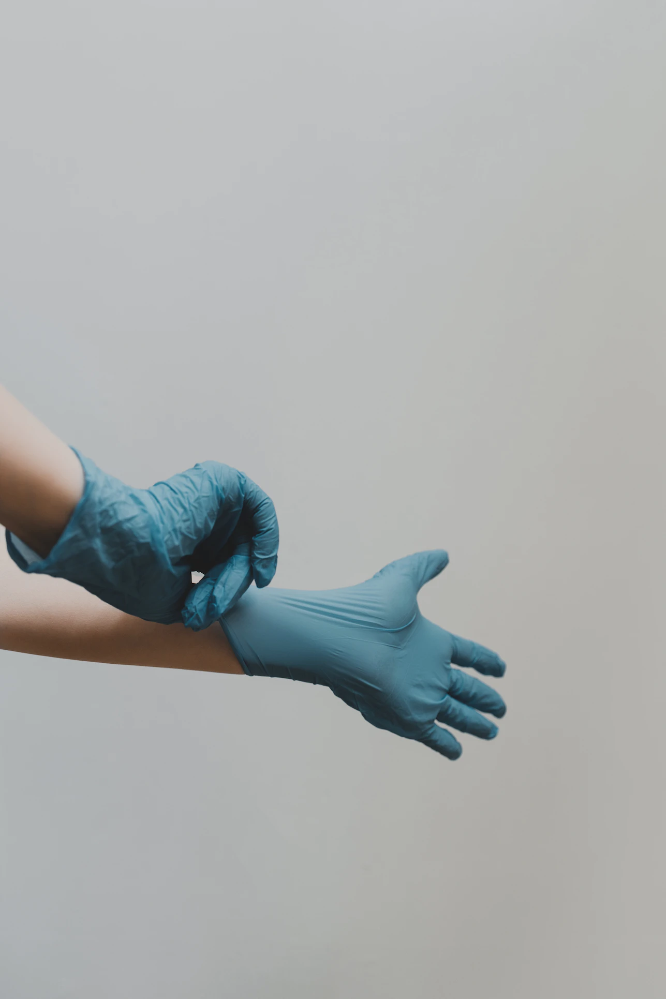

HOSPITAL.

都内の診療所
自費検査を提供する検査機関の一覧を紹介しております。
診療所一覧
| 診療所名 | 市区町村名 | 受付時間 | URL | 検査分析方法 | 検査時間 | PCR検査費用 | 抗原検査費用 |
|---|---|---|---|---|---|---|---|
| クリニックフォア大手町 | 千代田区 | 月-金 9:00-13:00、15:00-19:30 土日祝休診 | www.clinicfor.life | PCR検査(RT-PCR, NEAR法) 抗原定性 | PCR検査（RT-PCR）:検体採取後６時間、 PCR検査（NEAR法）:検体採取後30-60分、 抗原定性検査：検体採取後15分 | RT-PCR:19,800円（診断書込み） NEAR法:30,800円(診断書込み) | 15,400円(診断書込み) |
| クリニックフォア有楽町 | 千代田区 | 月-金 10:00-13:30、15:30-19:30 土日祝休診 | www.clinicfor.life | PCR検査(RT-PCR, NEAR法） 抗原定性 | PCR検査（RT-PCR）:検体採取後６時間、 PCR検査（NEAR法）:検体採取後30-60分、 抗原定性検査：検体採取後15分 | RT-PCR:19,800円（診断書込み） NEAR法:30,800円（診断書込み） | 15,400円(診断書込み) |
| 日比谷国際クリニック | 千代田区 | 月～金曜 9:00⁻13:00、14:00⁻17:00 | https://www.hibiya kokusai.or.jp |
抗原定性 抗体定量 | PCR法：検体採取後２４時間 抗原定性：検体採取後１５分 抗体定量：検体採取後１週間以内 | 1回20000円 | 1回5500円 |
| たけ内科 秋葉原 神田 | 千代田区 | 年中無休9:00-21:00 | https://akiba-kanda.jp | LAMP法 RT-PCR法 | 検体採取後 いずれの検査法でも2時間以内、もしくは24時間以内 | LAMP法(唾液) 2時間: 30000円 RT-PCR法(唾液) 2時間: 35000円 LAMP法(唾液) 24時間: 20000円 RT-PCR法(唾液) 24時間: 25000円 | なし |
| 神田すこやかクリニック | 千代田区 | オンライン24時間受付 | https://www.kanda-sukoyaka.com | PCR法 NEAR法 | PCR法：2～18時間 NEAR法:20分 | 1回16500円 NEAR法 1回22000円 | 1回15000円 |
| 神田北口診療所 | 千代田区 | オンラインで24時間365日予約受付中 | https://kandakita. clinic |
PCR法 | 検体採取後平均３時間 （２時間～６時間） | 1回10,000円 | なし |
| クリニックフォア飯田橋 | 千代田区 | 月-金 10:00-13:30、15:00-19:30 土日祝 9:00-12:30、14:00-17:30 | www.clinicfor.life | PCR検査(RT-PCR, NEAR法） 抗原定性 | PCR検査（RT-PCR）:検体採取後６時間、 PCR検査（NEAR法）:検体採取後30-60分、 抗原定性検査：検体採取後15分 | RT-PCR:19,800円（診断書込み） NEAR法:30,800円（診断書込み） | 15,400円(診断書込み) |
| 東京キャンサークリニック | 千代田区 | 月～金曜 8:30-17:15、土日曜休診 オンライン受付は24時間 | https://tokyocancer clinic.jp |
PCR法 抗原定性検査 | 検体採取後 PCR法：24時間(最短6時間) 抗原定性検査：1時間 | 1回 16,500円 | 1回 7,700円 |
| 株式会社 イミュノ・ジェネックス | 千代田区 | 営業時間：月～金 8:30～17:15（土日祝休） web受付（郵送対応のみ）：24時間 | www.immuno genex.co.jp |
PCR法 | PCR法：検体受領後24時間以内 | 1回 16,500円（税込） | なし |
| グローバルヘルスケアクリニック | 千代田区 | 月ー金 10：00-18：00 土 10：00-12：00 | www/ghc.tokyo | PCR法、抗原定性検査 | 抗原定性検査：約5分 PCR法：最短で6時間（提出から通知まで診療時間内に限る） | 1回 14300円 | 1回 9900円 |
| 医療法人社団知慎会 JTKクリニック | 千代田区 | 月～金曜,日曜 9:30-15:00 土曜休診 | https://www.jtk clinic.com |
PCR法 | 検体採取後最短3時間 (12時まで採取分15時判別） | 1回22,000円 | なし |
| 医療法人社団茂恵会半蔵門病院 | 千代田区 | 月ー土 9：00－17：00 | www.hanzomon. com |
PCR法 | PCR法 検体採取当日、または翌日 検体採取を午前10時半までに行った場合は、当日結果判明。それ以降は翌日午前9時以降判明 | 1回 16500円（税込み） | なし |
| 山岡クリニック | 千代田区 | 月-金 9:30-12:45, 15:00-18:00 土 9:30-12:45 | www.yamaoka-clinic.com | PCR法 | PCR法： 午前11時までの検体提出＝当日18時まで 午前11時以降、または土曜＝翌営業日 | PCR検査 22,000円 | なし |
| 四谷メディカルキューブ | 千代田区 | 月～金 15：00-16：00 | http://www. mcube.jp |
PCR法 | 検体採取後 PCR法：24時間 | 1回20,000円 | なし |
| 東京逓信病院 | 千代田区 | 月～金 10:00-16:00 | www.hospital. japanpost.jp/tokyo |
PCR法 抗体検査 | 検体採取後32時間 | 1回 33,000円 | なし |
| 医療法人社団 玉寄クリニック | 中央区 | 月-金(木を除く) 9:00-12:30、14:30-18:00 木、土曜(第2,5土は休診) 9:00-12:30 | tamayose-cl.jp | PCR検査(NEAR法)、抗原定性検査 | PCR検査(NEAR法)：検体採取後13分以内、抗原定性検査：検体採取後15分程度 | 1回 12000円 | 1回 6000円 |
| SmartAmp Station 日本橋 (スマートアンプステーション にほんばし) | 中央区 | オンラインによる24時間受付 | www.smartamp stationdnaform.jp/ |
PCR法 | PCR法:(通常検査)検体採取後1日;(クイック検査)検体採取後当日中※クイック検査当日12時50分までにご来店ください。 | ①PCR法:(通常検査)1,980円(税込);(クイック検査)9,900円(税込) | なし |
| ヘルス・マネジメント・クリニック | 中央区 | 日〜土曜日0:00-24:00オンラインで受付、土日祝日も対応 | http://hmclinic-tokyo.org | PCR法 | "検体採取後 特急検査：3時間半後 迅速検査：8時間後 通常検査：検査翌日の午前中" | 通常検査1回14,300円 | なし |